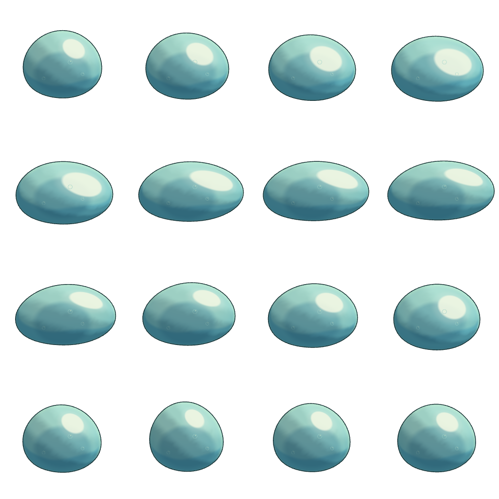
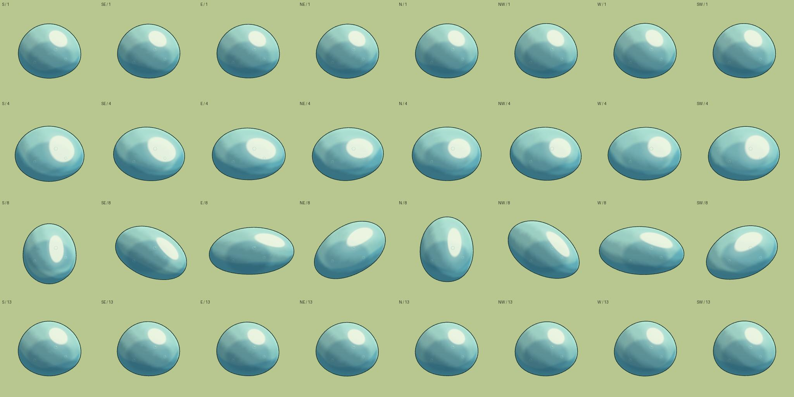

Slime · ทดลองแอนิเมชัน 2D
กลับเกมเรนเดอร์จากแอนิเมชัน 3D ชุดเดียว · 8 ทิศ · 16 เฟรมต่อรอบ · ยุบสะสมแรง → ไหลไปข้างหน้า → มวลตามทัน → เด้งคืนทรง
กำลังโหลดภาพ…
ขนาดใกล้เคียงตอนเล่น · ฉากทดสอบ
ภาพขยาย · จุดสัมผัสพื้นคงที่
ต้นแบบก่อนใส่เกม · ทุกทิศเรนเดอร์จากโมเดลเดียว · แสงคงที่ · ขนาดและจุดอ้างอิงเดียวกันทุกเฟรม
เทียบครบ 8 ทิศ · จังหวะเดียวกัน
ตรวจภาพต้นฉบับ 16 เฟรมของทิศนี้

ตรวจต้นทาง 3D · เทียบจังหวะเดียวกันครบ 8 ทิศ
ภาพเรนเดอร์จากโมเดลจริง จังหวะพัก → ยุบ → ยืด → คืนตัว
